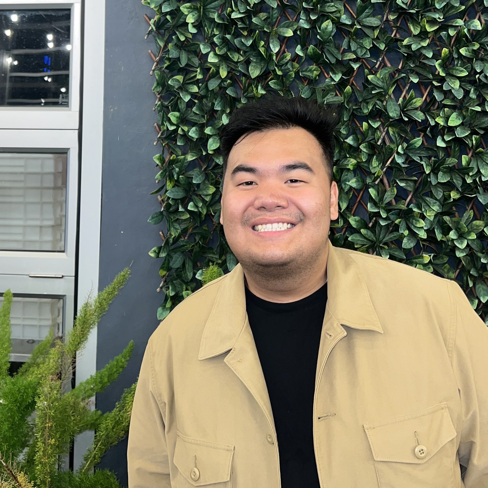

I’m a penultimate-year Computer Engineering student at UNSW with a deep passion for technology and innovation. I excel at problem-solving through coding and data structures and am eager to apply my skills in real-world scenarios. I love taking on challenges that push my limits, as they drive my growth and creativity. Alongside my studies and internship search, I run a freelance photography service, offering graduations, portraits, and event photo services. Beyond technology, I find inspiration in diverse fields, always seeking new perspectives to enhance my work.